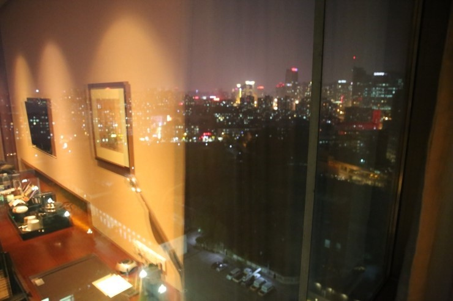

'대광그룹 우수사원 및 우수품질분임조 가족동반 해외연수' !!
중국 북경 3박4일 여행이야기를 시작합니다

" 중국 북경 해외연수 첫째날 이야기 "
7월 30일, 새벽2시 ! 엄청일찍모였죠 ^^
대광가족 32명이 대광판넬 광주공장에 모여 인천국제공항으로 출발 !
도착후 가족단위로 기념사진 찰칵 ! 
이번 대광그룹의 원할한 중국여행을 위해 롯데관광 신성융지점장님이 직접 동행해주셔서
원할한 티켓팅과 수화물접수후 비행기 탑승완료~~
 짜잔~ 드디어 중국 텐진공항 도착 !!
짜잔~ 드디어 중국 텐진공항 도착 !!
두시간여 비행후 텐진공항 도착하니
중국에 총 4대뿐인 럭셔리한 리무진버스 두대가 대기중이었습니다.

에어컨 빵빵한 4일동안 저희를 관광시켜줄 리무진버스를 타고
'금강산도 식후경'이라죠~ ㅎ
먼저 첫 여행시작인 전취덕 오리구이 를 먹으러 출발
를 먹으러 출발
전취덕 오리구이
낯선 중국에서의 첫끼로 입맛에 맞을까 ~ 모두들 긴장하고 식사했지만
웬걸 !! 상상이상으로 맛있는 점심이었습니다~ ^^
쉐프가 직접나와 오리를 준비해줬던게
인상적이었고 바삭하고 고소한 메인인 오리요리뿐 아니라….
10여가지의 다양한 음식들과 디저트로 든든한 첫끼였음
최고 
천안문
중국갔는데 천안문을 안갈수가 없죠~!
북경 시내 한가운데 떡하고 자리하고 있는
죽기전에 꼭 봐야 할 세계 역사 유적지로
세계에서 가장 큰 광장이라는 천안문을 직접보니~
우와~~~

어때요? 사진빨좀 받나요? 

핫! 한갑호 대표님 부부~~ ^^
수도박물관
중국이라는 큰대륙의 고대의 역사를 담고있는 박물관인 만큼 규모가 엄청났습니다~

자금성
유네스코가 지정한 세계문화유산으로 등록된 황제의 허락없이는 출입이 불가했다는
황제의 권위를 느낄수있는 규모의 성 !
10미터 성벽으로 둘러싸여
무려 800채의 건물과
9,999개의 방이 남아있다죠~
우리일행은 2만보가량 걸으며
아무리 관광이라지만 ㅎ 약간 힘들었던~ 코스 
그러나 우리 모두는
중국대륙의 엄청난 스케일에 놀랄수 밖에 없었습니다~
너무 돌아다녔더니 ~ 배고파요~~ 
우리의 배고픔을 달래주기위해 준비된곳
상해요리(피풍당) !
튀긴 게와 마늘이 조화를 이룬 게요리와
생선을 이용한 조림요리 등 다양한 메뉴가 제공되는 피풍당 !
상해에만 41곳 체인점이 있는 피풍당은 현지인들이 즐겨 찾는 유명한 맛집이라고 하더군요~
왕부정거리 
북경시 최대 번화가로 시내 명품점들과 백화점이 위치해있고
밤이 되면 하늘에 동영상이 밝게 보이는 유명한 나이트투어 코스 ^^
살아있는 전갈과 지네, 불가사리 등
주문하면 바로 튀겨주는 
다들 처음 먹어보는 것이었지만
기억에 오래 남을만한 색다른 시간이었습니다~ ㅎ
진짜~ 별거 별거 다 먹더군요 ㅎ
첫째날의 마지막 일정
써커스~~~~
중국 500여년의 긴 역사를 갖은 남다른 스케일에 놀랐고~
큰 관람홀에 또 놀랐고~
우리는 대광판넬의 VIP답게 ~
S석에서 관람
짜잔~
우리가 북경에서 묵었던
웨스틴 호텔 차오양 (WESTIN HOTEL Chaoyang)
북경의 중심 자오양에 위치한, 5성급호텔
550개의 객실 및 피트니스센터, 귀빈층, 실내 수영장, 대연회장도 갖춰져있는 초특급호텔로
버락 오바마와 APEC 정상회의때 귀빈들이 방문하였던
그런 수준높은 호텔에서 하룻밤을 ~~^^

일반 패키지 관광객들은 없는 호텔이어서…무지 럭셔리하고 쾌적했구요~

향신료때문에 식사가 힘들었던 가족은
럭셔리했던 조식으로 훌륭한 식사를 할수 있었습니다

어때유~! 
부럽죠? ^^
2일차 이야기가 계속됩니다~~